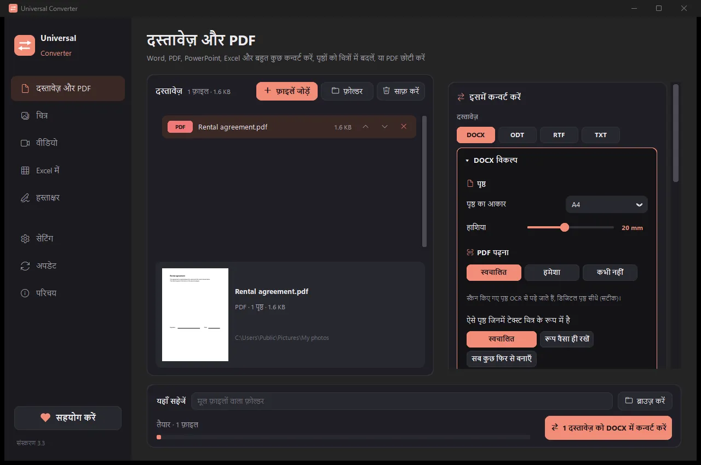
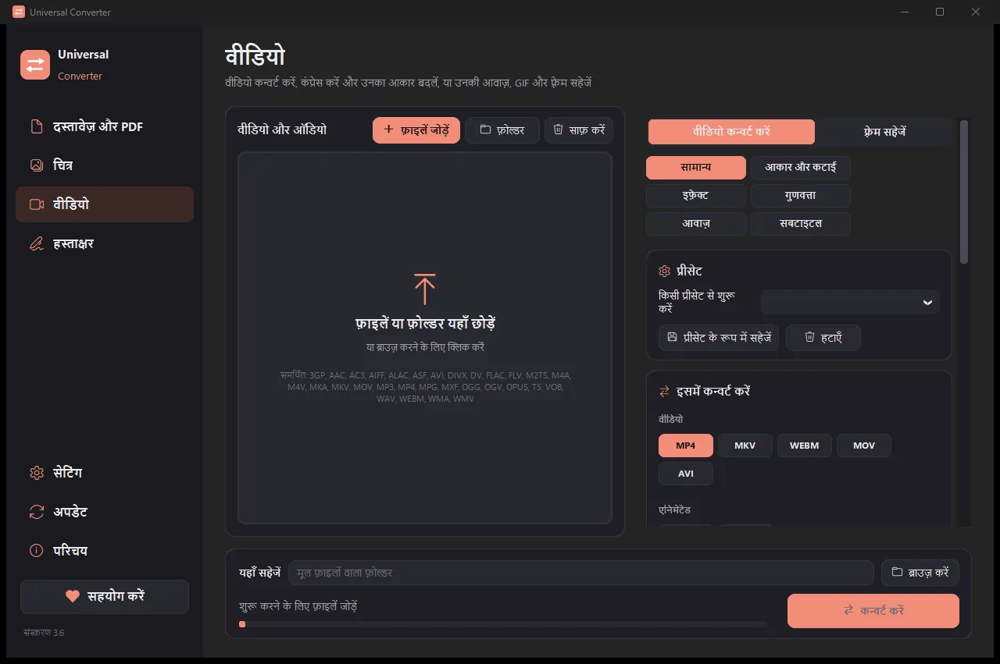
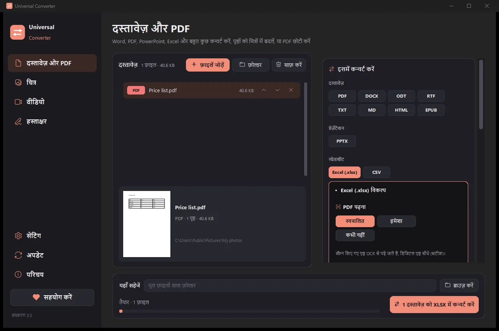
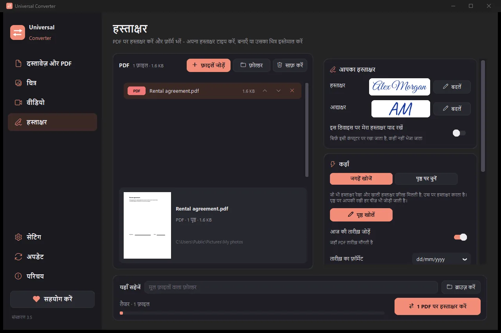
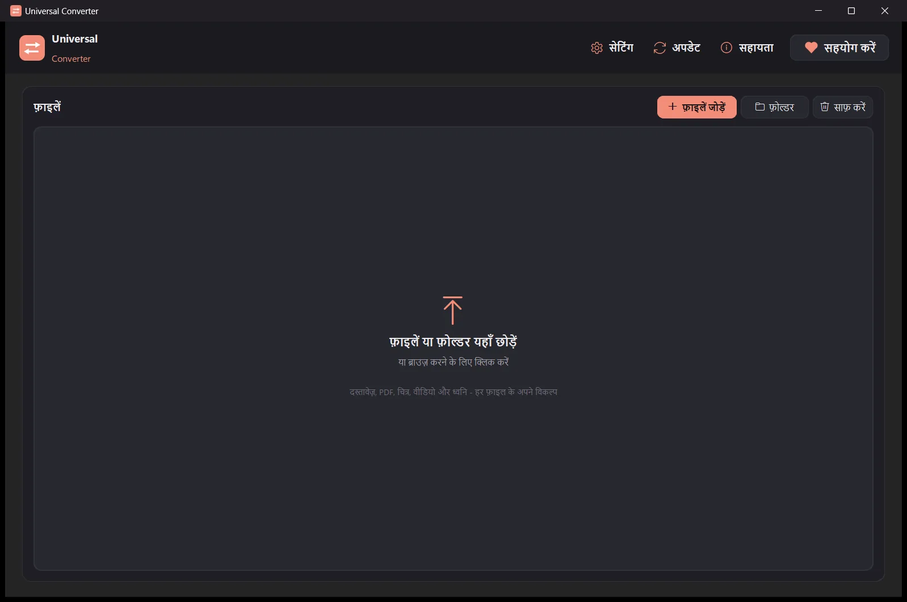

अपनी फ़ाइलें अपने ही डिवाइस पर कन्वर्ट करें
चित्र, दस्तावेज़, वीडियो और ऑडियो, PDF और तालिकाओं से Excel, सब एक ही ऐप में। कुछ भी अपलोड नहीं होता: आपकी फ़ाइलें कभी आपके डिवाइस से बाहर नहीं जातीं।
इंस्टॉल और अपडेट कैसे करें
- डाउनलोड की गई .dmg खोलें और Universal Converter को Applications में खींचें।
- ऐप खोलें। पहली बार macOS उसे रोकता है क्योंकि उस पर Apple का हस्ताक्षर नहीं है: “हो गया” पर क्लिक करें।
- सिस्टम सेटिंग्स > गोपनीयता और सुरक्षा खोलें, नीचे स्क्रॉल करें, “फिर भी खोलें” पर क्लिक करें और अपना पासवर्ड दर्ज करें। यह सिर्फ़ एक बार करना होता है।
अपडेट: अगर ऐप पहली बार खुलने पर आप अनुमति दें, तो यह हर बार शुरू होने पर नए संस्करण जाँचता है, उनके डिजिटल हस्ताक्षर सत्यापित करता है और आपके चुनने पर उन्हें इंस्टॉल करता है।
इंस्टॉल और अपडेट कैसे करें
- अपने फ़ोन पर “Android के लिए डाउनलोड करें” पर टैप करें।
- डाउनलोड की गई फ़ाइल खोलें। अगर Android पूछे, तो अपने ब्राउज़र या फ़ाइल मैनेजर को ऐप इंस्टॉल करने की अनुमति दें।
- इंस्टॉल करें पर टैप करें।
अपडेट: ऐप खोलने पर वह नया संस्करण जाँचता है और उसके तैयार होने पर आपको बताता है। उसे इसी तरह डाउनलोड करें और पुराने के ऊपर इंस्टॉल करें; आपकी सेटिंग बनी रहती हैं।
इंस्टॉल और अपडेट कैसे करें
- .AppImage फ़ाइल डाउनलोड करें।
- उसे चलने योग्य बनाएँ: राइट-क्लिक करें, Properties > Permissions खोलें और प्रोग्राम की तरह चलाने की अनुमति दें (या टर्मिनल में: chmod +x Universal-Converter-*.AppImage)।
- उस पर डबल-क्लिक करें। कुछ इंस्टॉल नहीं होता: ऐप यही एक फ़ाइल है।
अपडेट: अगर आप पहली बार खुलने पर अनुमति देते हैं, तो ऐप हर बार शुरू होने पर नए संस्करण देखता है, उनके डिजिटल हस्ताक्षर की जाँच करता है और AppImage फ़ाइल को उसी जगह बदल देता है।

निजी
सब कुछ आपके डिवाइस पर चलता है। न अपलोड, न कतार में इंतज़ार, न आकार की कोई सीमा।
मुफ़्त
इस्तेमाल के लिए मुफ़्त, बिना विज्ञापन, बिना अकाउंट और बिना वॉटरमार्क।
34 भाषाएँ
अंग्रेज़ी, यूनानी, स्पेनिश, इतालवी, जर्मन, फ़्रेंच, पुर्तगाली (पुर्तगाल और ब्राज़ील), पोलिश, रूसी, अरबी, हिब्रू, चीनी, जापानी, कोरियाई, तमिल, अफ़्रीकान्स, योरूबा, हाउसा, हिंदी, इंडोनेशियाई, तुर्की, वियतनामी, स्वीडिश, डच, डेनिश, यूक्रेनी, चेक, रोमानियाई, बल्गेरियाई, नॉर्वेजियाई, मलय, फ़िलिपिनो और स्वाहिली।
एक ही विंडो में पाँच टूल

दस्तावेज़ और PDF
PDF, Word, ODT, RTF, TXT, Markdown, HTML, EPUB, PowerPoint और Excel के बीच कन्वर्ट करें। पृष्ठों को चित्रों में बदलें और कई फ़ाइलों को एक PDF में जोड़ें। फ़ॉन्ट, आकार और रंग बने रहते हैं। PDF को अपने चुने आकार तक छोटा करें। स्कैन और भरे हुए फ़ॉर्म संपादित किए जा सकने वाले टेक्स्ट और तालिकाओं में बदल जाते हैं, पृष्ठ जैसी बनावट में। तालिकाएँ, बैंक स्टेटमेंट की तरह रेखाओं के बिना भी, असली तालिकाओं के रूप में Word में आती हैं, और पुरानी Word (.doc) और PowerPoint (.ppt) फ़ाइलें भी खुलती हैं।
चित्र
JPG, PNG, WEBP, TIFF, BMP, GIF और ICO के बीच कन्वर्ट करें। पिक्सेल, प्रतिशत या फ़ाइल आकार से आकार बदलें, चित्रों को PDF या Word फ़ाइल में जोड़ें, और चित्रों का टेक्स्ट पढ़ें (OCR)। PDF भी जोड़ी जा सकती हैं: हर पृष्ठ एक चित्र बन जाता है।

वीडियो
वीडियो को MP4, MKV, WebM, MOV और AVI के बीच कन्वर्ट करें और AV1, H.265, H.264 या VP9 से कंप्रेस करें। ट्रिम करें, काटें, घुमाएँ और आकार बदलें, GIF बनाएँ, फ़्रेम को चित्र के रूप में सहेजें, या सिर्फ़ आवाज़ को MP3, M4A, AAC, FLAC, WAV, AIFF, OGG, AC-3, MP2, WavPack, MKA, CAF या Opus के रूप में रखें। कई वीडियो हों तो हर एक की अपनी सेटिंग हो सकती है। Android पर: MP4, MKV, WebM, MOV या GIF, या आवाज़ MP3, M4A, AAC, OGG, Opus, FLAC, WAV, AIFF या MKA के रूप में; ट्रिम करें, काटें, घुमाएँ, आकार बदलें और फ़्रेम सहेजें।

Excel
PDF, स्कैन और फ़ोटो से तालिकाएँ Excel या CSV में निकालें: बैंक स्टेटमेंट, चालान, मूल्य सूचियाँ। हिंदी, अंग्रेज़ी, यूनानी और 30 से ज़्यादा दूसरी भाषाएँ पढ़ता है।

हस्ताक्षर
PDF पर हस्ताक्षर करें और फ़ॉर्म भरें। अपना नाम हस्तलिपि शैली में टाइप करें, अपना हस्ताक्षर बनाएँ या उसकी फ़ोटो इस्तेमाल करें। हर PDF ऐप को मिली हस्ताक्षर की रेखाओं पर निशान लगाकर खुलता है: उन पर क्लिक या टैप करें, या वहाँ जहाँ हस्ताक्षर, आद्याक्षर, तारीख़, टेक्स्ट या सही के निशान जाने हैं। कई फ़ाइलों पर एक साथ हस्ताक्षर करें; मूल फ़ाइलें बिना छुए रहती हैं।
- जब हो सके, वीडियो के लिए आपका ग्राफ़िक्स कार्ड इस्तेमाल करता है: आमतौर पर 5 से 20 गुना तेज़।
- पूरे फ़ोल्डर खींचकर डालें: हर फ़ाइल एक ही बार में कन्वर्ट होती है।
- हर फ़ाइल के लिए एक स्क्रीन: दस्तावेज़, चित्र और वीडियो एक साथ जोड़ें, और हर एक को अपने विकल्प मिलते हैं।
- नए संस्करणों के बारे में बताता है; Windows, Mac और Linux पर यह उन्हें डिजिटल रूप से सत्यापित करके आपके लिए इंस्टॉल कर सकता है।
- आपके डिवाइस के अनुसार लाइट और डार्क रूप।
यह कैसे काम करता है
- Universal Converter खोलें।
- अपनी फ़ाइलें या पूरा फ़ोल्डर विंडो में खींचें, या फ़ाइलें जोड़ें पर क्लिक करें।
- कन्वर्ट करें पर क्लिक करें। नई फ़ाइलें मूल फ़ाइलों के बगल में, या आपके चुने फ़ोल्डर में सहेजी जाती हैं।

यह क्या कर सकता है
- PDF को Word में कन्वर्ट करें
- Word दस्तावेज़ों को PDF में कन्वर्ट करें
- कई फ़ाइलों को एक PDF में जोड़ें
- PDF को अपने चुने आकार तक कंप्रेस करें
- PDF को 100 KB, 200 KB या ऑनलाइन फ़ॉर्म के मांगे गए किसी भी आकार में कंप्रेस करें
- PDF पृष्ठों को JPG चित्रों में कन्वर्ट करें
- स्कैन किए दस्तावेज़ को संपादन योग्य Word फ़ाइल में बदलें
- चित्रों को JPG, PNG, WEBP और अन्य के बीच कन्वर्ट करें
- चित्रों का आकार बदलें या उन्हें किसी फ़ाइल आकार तक छोटा करें
- फ़ोटो या हस्ताक्षर को 20 KB, 50 KB या सटीक पिक्सेल में बदलें
- फ़ोटो को एक PDF में जोड़ें
- JPG से PDF, 100 KB से कम
- चित्र से टेक्स्ट कॉपी करें (OCR)
- वीडियो को बिना अपलोड किए कंप्रेस करें
- वीडियो को MP4, MKV, WebM, MOV और AVI के बीच कन्वर्ट करें
- वीडियो की आवाज़ को MP3 के रूप में सहेजें
- वीडियो से GIF बनाएँ
- PDF से तालिकाएँ Excel में निकालें
- बैंक स्टेटमेंट PDF को Excel में कन्वर्ट करें
- PDF चालानों से तालिकाएँ Excel में निकालें
- PDF पर हस्ताक्षर करें
- PDF फ़ॉर्म भरें
सवाल
क्या यह सच में मुफ़्त है?
हाँ। Universal Converter इस्तेमाल के लिए मुफ़्त है, बिना विज्ञापन, बिना अकाउंट और बिना समय सीमा के। अगर यह आपके काम आए, तो आप स्वैच्छिक योगदान से इसके विकास में सहयोग कर सकते हैं, पर ऐसा करना कभी ज़रूरी नहीं।
क्या मेरी फ़ाइलें कहीं अपलोड होती हैं?
नहीं। हर कन्वर्ज़न आपके अपने डिवाइस पर होता है, इसलिए यह इंटरनेट कनेक्शन के बिना भी काम करता है। ऐप सिर्फ़ अपडेट जाँचने, आपकी चुनी हुई टेक्स्ट पहचान लिपियाँ डाउनलोड करने और, अगर आप अनुमति दें, गुमनाम त्रुटि रिपोर्ट भेजने के लिए ऑनलाइन जाता है।
क्या इसे डाउनलोड करना सुरक्षित है?
हाँ। इस पेज पर आने से पहले हर संस्करण के Windows, Mac, Linux और Android डाउनलोड VirusTotal पर लगभग 60–70 एंटीवायरस इंजनों से जाँचे जाते हैं; हर डाउनलोड बटन के नीचे का लिंक उस फ़ाइल की रिपोर्ट खोलता है। ऐप में कोई विज्ञापन नहीं है और यह कोई निजी डेटा इकट्ठा नहीं करता, और Microsoft Store संस्करण की जाँच और हस्ताक्षर Microsoft भी करता है।
Windows SmartScreen चेतावनी दिखाता है। क्या यह सामान्य है?
हाँ। इंस्टॉलर पर अभी कोड हस्ताक्षर नहीं है, इसलिए Windows उसे नहीं पहचानता। “अधिक जानकारी” चुनें, फिर “फिर भी चलाएँ”। उसके बाद के अपडेट ऐप खुद डिजिटल रूप से सत्यापित करता है। या इसे Microsoft Store से इंस्टॉल करें, जहाँ कोई चेतावनी नहीं दिखती।
मैं इसे Mac पर कैसे खोलूँ?
डाउनलोड की गई फ़ाइल खोलें और Universal Converter को Applications में खींचें। ऐप पर Apple का हस्ताक्षर नहीं है, इसलिए पहली बार खोलने पर macOS उसे रोकता है: “हो गया” पर क्लिक करें, फिर सिस्टम सेटिंग्स > गोपनीयता और सुरक्षा खोलें, “फिर भी खोलें” पर क्लिक करें और अपना पासवर्ड दर्ज करें। यह सिर्फ़ एक बार करना होता है।
मैं इसे Android पर कैसे इंस्टॉल करूँ?
अपने फ़ोन पर APK डाउनलोड करें, उसे खोलें और पूछे जाने पर इंस्टॉल की अनुमति दें (Android 10 या नया)। सभी 34 भाषाएँ पहले से शामिल हैं; ऐप की सेटिंग में एक चुनें। नया संस्करण आने पर ऐप आपको बताता है।
यह कौन-सी भाषाएँ बोलता है?
ऐप अंग्रेज़ी, यूनानी, स्पेनिश, इतालवी, जर्मन, फ़्रेंच, पुर्तगाली (पुर्तगाल और ब्राज़ील), पोलिश, रूसी, अरबी, हिब्रू, चीनी, जापानी, कोरियाई, तमिल, अफ़्रीकान्स, योरूबा, हाउसा, हिंदी, इंडोनेशियाई, तुर्की, वियतनामी, स्वीडिश, डच, डेनिश, यूक्रेनी, चेक, रोमानियाई, बल्गेरियाई, नॉर्वेजियाई, मलय, फ़िलिपिनो और स्वाहिली में है। आप इंस्टॉलर में चुनते हैं, या बाद में सेटिंग में।